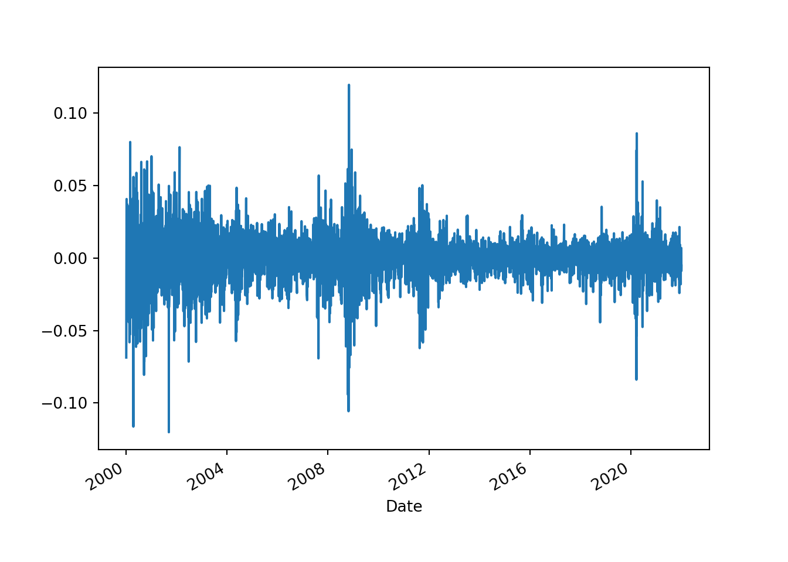

Chapter 5 4.2 기초 개념
5.1 4.2.1 확률과정
5.1.1 -
5.1.1.1 확률 변수 (random variable 또는 stochastic variable)
\(0 < Pr(x=r) < 1\) 을 만족하는 임의의 정수 r이 최소 하나가 존재하는 경우 \(x\)를 지칭한다
5.1.1.2 확률 과정 (stochastic process)
적절한 확률공간에서 정의되는 \(x\)를 t-시점마다 기록한 일련의 확률변수를 지칭하며 보통 \({x_t}\)로 표시한다. \(\{x_t\}^T_1 = (x_1, x_2, \cdots, x_T)\)를 확률변수의 모집단 \(\{x_t\}^\infty_{-\infty}\) 중 \(T\)개의 특정한 실현값(realization)이라고 하자.모든 실현 가능한 값들로 구성된 확률변수의 모집단을 확률과정의 ‘앙상블(ensemble)’ 이라고 부른다.
일반적으로 \(T\)개의 실현값으로 구성된 확률과정은 \(T\)-차원의 결합확률분포 \(F(x_1,x_2,\cdots,x_T)\) 로 기술할 수 있다. 결합확률분포의 모든 모멘트(평균, 분산 등)을 단 한 번의 실현값 x_t로 부터 추론하는 것은 불가능하기 때문에 확률과정을 이야기할 때는 보통 ‘안정성’(stationarity)이라는 가정을 도입하게 된다.
5.2 4.2.2 안정성, 자기공분산 및 자기 상관
5.2.1 -
5.2.1.1 (약)안정성
다음 조건을 만족하는 경우 시계열 \(x_t\)는 ‘약안정적’(weakly stationary 또는 covariance stationary)라고 한다.
\[ E(x_t)=\int^\infty_{-\infty}x_tf(x_t)dx_t = \mu < \infty \qquad \forall t \\ Var(x_t) = E(x_t=\mu)^2 = \int^\infty_{-\infty}(x_t-\mu)^2f(x_t)dx_t = \gamma_0 < \infty \qquad \forall t \\ Cov(x_t, x_{t-k}) = E(x_t-\mu)(x_{t-k}-\mu) = \gamma_k < \infty \qquad \forall t,k \]
단, \(f(x_t)\)는 확률변수 \(x_t\) 의 비조건부밀도함수를 나타낸다.
중요한 점은 일차 및 이차 모멘트들이 ‘시간 가변적이지 않은 유한한 상수’일 때 \(x_t\)를 안정적이라고 한다는 것입니다.
5.2.1.2 자기공분산 (autocovariance) [\(\gamma_k\)]
공분산(covariance)이 두 변수사이의 움직임을 측정하는데 반하여 \(k\)-시점 떨어진 자기자신의 과거값과의 움직임을 예측하는데 쓰인다. 관측치들 사이의 거리가 과거 \(k\)-시점이건, 미래로 \(k\)-시점이던 관계가 없기 때문에 \(\gamma_k = \gamma_{-k} = Cov(x_t, x_{t+k})\)이 성립한다.
‘표본자기공분산’(\(\hat{\gamma_k}\))은 다음과 같이 계산할 수 있다.
\[ \hat{\gamma_k} = (1/T)\Sigma^{T-k}_{t=1}(x_t - \bar{x})(x_{t+k} - \bar{x}) \]
5.2.1.3 자기상관계수 (autocorrelation) [\(\rho_k\)]
자기공분산값은 변수를 어떠한 단위로 측정하는가에 따라 크기가 달라지기 때문에 \(\gamma_k\)를 \(\gamma_0\), 즉 분산으로 나눈 ‘자기상관계수’ \(\rho_k\)를 계산한다.
\[ \rho_k = corr(x_t,x_{t-k}) = \frac{\gamma_k}{\gamma_0} \]
자기상관계수를 각각의 \(k\)에 대한 함수로 표시한 것을 ‘자기상관함수’(ACF)라고 하고 ‘correlogram’이라고도 부른다.
‘표본자기상관계수’(\(\hat{\rho_k}\))는 다음과 같이 계산한다.
\[ \hat{\rho_k} = \frac{\Sigma^T_{t=k+1}(x_t-\bar{x})(x_{t-k}-\bar{x})}{\Sigma^T_{t=1}(x_t-\bar{x})^2} \]
5.2.1.4 강안정성
확률과정의 특성이 기준시점의 변화에 영향을 전혀 받지 않는 경우 이 과정을 ‘강안정적’(strictly stationary 또는 strongly stationary)라고 한다. 다시 말하자면, 임의의 시간집합 \(t_1,t_2,\cdots,t_m\)에 대한 결합확률분포 \(F(t_1,t_2,\cdots,t_m)\)이 이를 읨의로 \(n\)-시점 이동한 \(t_1+n,t_2+n,\cdots,t_m+n\)에 대한 결합확률분포 \(F(t_1+n,t_2+n,\cdots,t_m+n)\)와 같은 경우이다. 즉,
\[ F(t_1,t_2,\cdots,t_m) = F(t_1+n,t_2+n,\cdots,t_m+n) \]
\(m=1\)일 경우 평균과 분산이 모두 상수임을 의미하며 \(m=2\)일 경우 공분산이 다치 시차 \(k\)의 함수일 뿐 시간 \(t\)에는 종속하지 않아야 한다.
\[ Cov(x_t, x_{t+k}) = Cov(x_T, x_{T+k}) \]
강안정적과정은 유한한 평균과 분산을 가질 필요가 없으므로 약안정성이 강안정성보다 더 엄격한 개념이 된다.
자기상관함수의 신뢰구간을 구하는 부분은 생략
5.2.2 예제) 안정적 시계열, 표본자기상관함수 및 유의성 검정
코스피 데이터를 바탕으로 분석을 진행하겠습니다. 데이터는 야후 파이넨스 라이브러리를 활용합니다.
kospi = yf.download("^KS11",start="2000-01-04", end="2021-12-31")##
[*********************100%***********************] 1 of 1 completedkospi["rtn"]=kospi["Adj Close"].pct_change() #수익률 추가
data = kospi["rtn"][1:] # 첫번째 열의 수익률은 nan이므로 제거 필요함.
print(kospi.columns)## Index(['Open', 'High', 'Low', 'Close', 'Adj Close', 'Volume', 'rtn'], dtype='object')kospi## Open High ... Volume rtn
## Date ...
## 2000-01-04 1028.329956 1066.180054 ... 195900 NaN
## 2000-01-05 1006.869995 1026.520020 ... 257700 -0.068675
## 2000-01-06 1013.950012 1014.900024 ... 203500 -0.025874
## 2000-01-07 949.169983 970.159973 ... 215700 -0.012635
## 2000-01-10 979.669983 994.940002 ... 240200 0.040679
## ... ... ... ... ... ...
## 2021-12-24 3009.479980 3025.770020 ... 537500 0.004756
## 2021-12-27 3013.939941 3017.310059 ... 475000 -0.004276
## 2021-12-28 3006.770020 3020.290039 ... 607000 0.006898
## 2021-12-29 3002.899902 3007.719971 ... 545800 -0.008923
## 2021-12-30 2999.750000 3005.360107 ... 460600 -0.005225
##
## [5428 rows x 7 columns]# 코스피 종가 그래프
plt.cla()
kospi["Adj Close"].plot.line()
plt.show()
# 코스피 일간 수익률 그래프
plt.cla()
kospi["rtn"].plot.line()
plt.show()
5.2.2.1 ACF 연산
nan을 제거하기 위해 첫번째 data를 제거하여야 합니다.
import statsmodels.api as sm
from statsmodels.tsa.stattools import acf
acf(data, nlags=5)## array([ 1. , 0.01690129, -0.01668116, 0.00358841, -0.01769711,
## -0.02776514])그래프
from statsmodels.graphics.tsaplots import plot_acf
plot_acf(data, lags=10, use_vlines=True, zero = False, auto_ylims=True)
# zero : 0차시 제거
# auto_ylims : 자동으로 y축 축적 제공됨.
plt.show()
5.2.2.2 PACF 연산
import statsmodels.api as sm
from statsmodels.tsa.stattools import pacf
pacf(data, nlags=5)## array([ 1. , 0.0169044 , -0.01697792, 0.00416667, -0.01813781,
## -0.0270649 ])그래프
from statsmodels.graphics.tsaplots import plot_pacf
plot_pacf(data, lags=10, use_vlines=True, zero = False, auto_ylims=True)
# zero : 0차시 제거
# auto_ylims : 자동으로 y축 축적 제공됨.
plt.show()
5.2.2.3 Box test
여러 개의 자기상관계수 값들을 동시에 0인가 하는 귀무가설을 검정하기 위해서는 Q-통계량을 사용한다. Box-Pierce(1970) Q-통계량은 표본상관계수 제곱의 합을 이용하며 이 통계량을 소표본에서도 유용하도록 교정한 Liung-Box(1978)의 수정 Q-통계량은 다음과 같다.
\[ Q = T(T+2)\Sigma^q_{j=1}\hat{\rho^2_j}/(T-j) \sim \chi^2(q) \]
검정통계량의 분포는 귀무가설하에서 유도한다. Ljung-Box Q-통계량의 귀무가설은 “\(q\)개의 \(\hat{\rho_j}\)이 동시에 0이다.” 이므로 표본으로부터 구한 Q-통계량이 자유도 q를 갖는 \(\chi^2\)-분포의 이론적 임계값보다 크다면 이들 중 최소한 하나의 값이 주어진 유의수준하에서 통계적으로 0과 다르다는 것으로 해석한다.
\(H_0\) : The data are independently distributed
\(H_1\) : The data are not independently distributed; they exhibit serial correlation.
Liung-Box(1978)
sm.stats.diagnostic.acorr_ljungbox(data, lags=[10])## lb_stat lb_pvalue
## 10 11.708956 0.305007sm.stats.diagnostic.acorr_ljungbox(data, lags=10)## lb_stat lb_pvalue
## 1 1.551099 0.212973
## 2 3.062335 0.216283
## 3 3.132281 0.371676
## 4 4.833831 0.304776
## 5 9.022923 0.108153
## 6 9.023727 0.172248
## 7 11.455119 0.119962
## 8 11.617499 0.169103
## 9 11.638545 0.234462
## 10 11.708956 0.305007Box-Pierce(1970)
sm.stats.diagnostic.acorr_ljungbox(data, lags=[10], boxpierce=True)## lb_stat lb_pvalue bp_stat bp_pvalue
## 10 11.708956 0.305007 11.69511 0.305985.3 4.2.3 편자기상관
5.3.1 -
편자기상관(partial autocorrelation)을 설명하기 위해 다음과 같은 AR(1)과정을 생각해 보자
\[ x_t = \phi_1x_{t-1}+\alpha_t,\quad \alpha_t \sim NID(0,\sigma^2) \]
이 식은 언뜻 보기에는 1시점 떨어진 두 관측치 \(x_t\)와 \(x_{t-1}\)만의 관계를 나타내는 것처럼 보이지만 후에 보는 것처럼 \(x_t\)와 \(x_{t-2}\)사이에도 일정한 상관관계를 갖게 된다. 따라서 예를 들어 AR(1) 과정을 따르는 \(x_t\)의 \(\rho_3 = corr(x_t,x_{t-3})\)을 구해보면 영이 아닌 값을 가질 수 있다. 문제에 답하기 위하여 일반적으로 두 관측치 \(x_t\)와 \(x_{t+k}\) 사이의 직접적인 상관관계를 이야기 하는 외에도 \(x_{t+1},x_{t+2},\cdots,\) 그리고 \(x_{t+k-1}\)의 상관관계를 계산해 볼 필요가 있게 된다. 즉, 다음과 같은 조건부 상관관계를 생각할 수 있다.
\[ Corr(x_t,x_{t+k}|x_{t+1},\cdots,x_{t+k-1}) \]
이를 ‘편자기상관’(partial autocorrelation; PAC)이라고 한다. \(x_t\)와 \(x_{t+k}\) 사이의 편자기상관계수는 \((x_t-\hat{x}_t)\)와 \((x_{t+k}-\hat{x}_{t+k})\)사이의 일반자기상관계수로 정의한다. 즉, \(x_t\)와 \(x_{t+k}\) 사이의 편자기상관계수를 \(\phi_{kk}\)라고 표시할때 이는 다음과 같이 정의된다.
\[ \phi_{kk} = \frac{Cov[(x_t-\hat{x}_t),(x_{t+k}-\hat{x}_{t+k})]}{\sqrt{Var(x_t-\hat{x}_t)}\sqrt{Var(x_{t+k}-\hat{x}_{t+k})}} \]
실제로 위의 식을 이해하거나 이 공식으로 편자기상관게수를 구하는 것은 쉽지 않을 것이다. 보다 직관적인 설명은 \(\phi_{kk}\)는 다음과 같은 회귀식 (AR(\(k\))모형)에서 \(k\)-번째 회귀계수와 같은 것으로 알려져 있다.
\[ x_{t+k}=\phi_{k1}x_{t+k-1}+\phi_{k2}x_{t+k-2}+\cdots+\phi_{kk}x_{t}+a_{t+k} \]
단 \(\phi_{ki}\)는 AR(\(k\))모형의 \(i\)-번째 회귀계수를 나타낸다. \(a_{t+k}\)는 정규분포하는 오차항으로 \(j\ge1\)에 대하여 \(x_{t+k-j}\)와 비상관이다.
추정하는 방법으로, ‘율-워커(Yule-Walker) 방정식’을 사용할 수 있다. AR(\(k\))모형 식에서 양변에 \(x_{t+k-j}\)를 곱하고 기대값을 취하면 다음 식을 얻는다
\[ \gamma_j=\phi_{k1}\gamma_{j-1}+\phi_{k2}\gamma_{j-2}+\cdots+\phi_{kk}\gamma_{j-k} \]
양변을 다시 \(x_i\)과정의 분산 \(\gamma_0\)로 나누면
\[ \rho_j=\phi_{k1}\rho_{j-1}+\phi_{k2}\rho_{j-2}+\cdots+\phi_{kk}\rho_{j-k} \]
와 같은 방적식 체계를 얻을 수 있으며 이를 율 워커 방정식이라고 부른다. 이를 크레이머 공식을 통해 \(\phi_{kk}\)를 구할 수 있다.
표본편자기상관함수 \(\hat{\phi}_{kk}\)는 \(\rho_j\) 대신 \(\hat{\rho_j}\)를 사용하여 계산한다. \(\rho_j\) 대신 \(\hat{\rho_j}\)를 사용하는 경우에도 율 -워커 방정식으로부터 구한 \(\hat{\phi}\)들은 최우추정량과 동일한 점근분포를 갖는 것으로 알려져 있다. 확률과정이 AR(\(p\))를 따를 때 \(\hat{\phi}_{kk}\)의 표준편차는 귀무가설에 관계업이 다음과 같이 근사할 수 있다.(Quenouille(1949))
\[ SE(\hat{\phi}_{kk}) \simeq 1/\sqrt{T} \]
그러므로 \(\hat{\phi}_{kk}\pm 2/\sqrt{T}\)는 \(\hat{\phi}_{kk}\)의 2표준편차 신뢰구간이 된다.
5.3.2 예제) 표본편자기상관함수(자기상관함수와 편자기상관함수)
5.3.2.1 ACF 연산
nan을 제거하기 위해 첫번째 data를 제거하여야 합니다.
import statsmodels.api as sm
from statsmodels.tsa.stattools import acf
acf(data, nlags=5)## array([ 1. , 0.01690129, -0.01668116, 0.00358841, -0.01769711,
## -0.02776514])그래프
from statsmodels.graphics.tsaplots import plot_acf
plot_acf(data, lags=10, use_vlines=True, zero = False, auto_ylims=True)
# zero : 0차시 제거
# auto_ylims : 자동으로 y축 축적 제공됨.
plt.show()
5.3.2.2 PACF 연산
import statsmodels.api as sm
from statsmodels.tsa.stattools import pacf
pacf(data, nlags=5)## array([ 1. , 0.0169044 , -0.01697792, 0.00416667, -0.01813781,
## -0.0270649 ])그래프
from statsmodels.graphics.tsaplots import plot_pacf
plot_pacf(data, lags=10, use_vlines=True, zero = False, auto_ylims=True)
# zero : 0차시 제거
# auto_ylims : 자동으로 y축 축적 제공됨.
plt.show()
5.4 4.2.4 월드분해정리와 선형필터
5.4.0.2 백색잡음과정(white-noise process)
\(a_t\)를 다음과 같은 평균과 (공)분산을 갖는 분포로부터의 일련의 비상관 확률변수라고 하자.
\[ E(a_t)=0 \\ Var(a_t)=\sigma^2_a \\ Cov(a_t,a_{t-k})=0, \qquad \forall k \neq0 \]
이러한 일련의 과정은 현시점까지의 자료가 미래에 대한 예측정보를 전혀 포함하고 있지 않다는 의미에서 백색잡음과정(white-noise process)라고 부른다.
5.4.0.3 월드분해정리 (Wold’s decomposition theorem)
모든 약안정적이고 비결정적인 ‘확률과정’\(x_t-\mu\)는 일련의 무상관 확률변수의 선형결합으로 표현할 수 있다.
이 때의 선형결합을 ‘선형필터’(linear filter)라고 하며 비결정적인 부분을 나타내는 비조건부 평균 \(\mu\)를 생략하는 경우 (즉, 0이라는 상수값을 가정한 것과 동일) 월드분해정리의 함의는 일반적인 선형확률과정 \(x_t\)를 ‘선형필터표현식’(linear filter representaion)으로 나타낼 수 있다는 것이다.